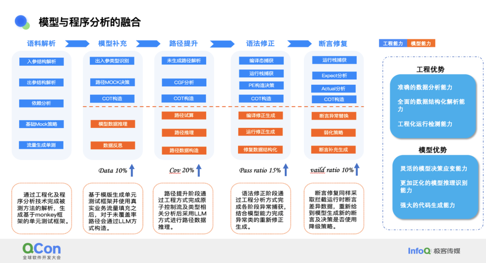
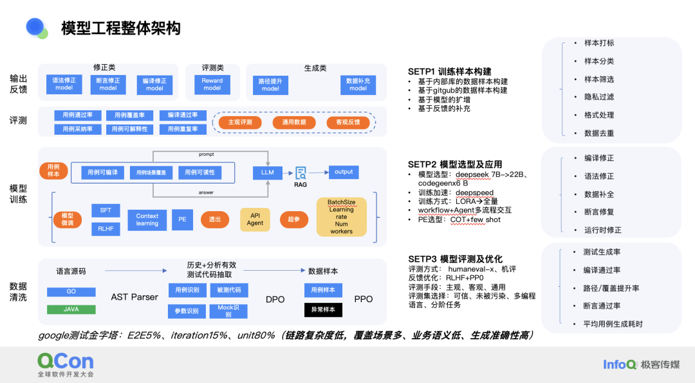

在软件开发的生命周期中，自动生成单元测试成为提高代码质量和开发效率的关键技术。在不久前举办的QCon 全球软件开发大会（上海站）上，字节跳动质量效能专家赵亮作了“基于 LLM 的单元测试用例自动生成”的精彩演讲，针对字节研发内部需求，基于大模型技术结合深度程序分析，实现存量及增量单元测试的自动生成。通过真实业务流量采集、单测框架能力和路径提升技术，有效解决单元测试的用例真实性和覆盖率问题，提升测试用例的生成效率和代码覆盖率。此外，在断言工程、语法修正技术和效果度量上，确保测试的准确性和可靠性；在支持快速迭代的开发流程中，显著提升研发效率和降低迭代周期。
2025 年 4 月 10 - 12 日，QCon 全球软件开发大会将在北京召开，字节跳动豆包 MarsCode IDE 研发负责人马翀出品的【AI 驱动的工程生产力】专题已上线，如果你有相关技术实践案例想要分享，欢迎点击链接提交演讲申请。
内容亮点：
技术优势：结合真实数据流量，通过深度程序分析和大模型泛化生成能力的优势，解决单元测试在日常研发中的编写慢、维护难的情况。
模式优势：通过数据蒸馏及抽象化提炼高质量数据用于模型 SFT，结合真实业务数据并以深度程序链路分析为辅助，提升单元测试在生成效果上的可测性、数据真实性及用例有效性。
以下是演讲实录（经 InfoQ 进行不改变原意的编辑整理）。【PPT 不公开】
我将与大家分享我们团队在大模型自动生成单元测试方面的研发经历，这个议题涵盖了我们从问题识别到解决方案的全过程。我将这个议题分为六个部分。
痛点与现状。这部分涉及到我们为何要着手解决这个问题，以及我们与业务团队合作时收集到的问题和痛点。这些痛点和现状是我们行动的出发点。
目标与挑战。基于前期收集的问题，我们设定了一系列目标，并在实现这些目标的过程中遇到了一系列的挑战。
数据质量提升。分享我们为了提升单测生成效果所做的工作，以及我们如何通过这些措施来提高整体效果。
代码生成效果提升。介绍我们采用的一些方法，以提升模型在生成单元测试方面的性能。
效果演示。展示我们所取得的一些成果，让大家更直观地了解我们的工作效果。
总结与规划。总结我们在整个过程中的不足之处，并分享我们的一些思考和未来的规划。
现状痛点
许多有编写单元测试经验的人普遍面临一个问题：业务代码的单元测试覆盖率普遍不高。这并非因为开发人员不愿意编写测试，而是因为他们没有足够的时间。许多业务的上线时间紧迫，留给开发代码的时间本就不多，更不用说编写单元测试了。在这种情况下，开发人员往往将质量保障工作交给测试团队，但测试团队的主要精力在于验证需求和功能的正确性，而不是逐行审查代码。
我将这些问题归纳为三个主要部分：
首先，编写单元测试耗时较长。在与业务团队的研发人员沟通时，我们发现编写单元测试的时间可能比编写业务代码还要长，这取决于被测方法的数据复杂度和代码复杂度。平均而言，编写单元测试的时间大约需要 5 到 15 分钟，取决于目标被测函数的逻辑复杂度和数据构造的困难程度。
其次，由于业务上线时间紧迫，研发人员可能同时处理多个需求，导致他们没有精力保证单元测试的编写，这使得存量问题愈发严重。例如，我们内部许多业务团队由于快速迭代导致大量未编写单元测试的代码，许多仓库的代码行覆盖率小于 10%，这使得暴露给线上的风险非常大。
最后，现有工具的效果不足。尽管许多公司和团队尝试通过工程化方法或基于搜索、遗传算法的单元测试生成方式，以及近年来随着大模型的兴起，尝试使用模型生成单元测试，但普遍存在几个问题：生成数据的可读性低，用例多样性不稳定，以及编译通过率低。这些问题导致生成的单元测试存在许多编译或运行问题，增加了研发人员修正的成本。
目标及挑战
目标
对单元测试的现状和痛点，我们设定了明确的目标，并将其拆解为几个关键部分，以期通过这些目标来解决我们面临的问题。
首先，尽管模型和插件如 Copilot 在代码生成方面取得了一定的进展，但它们还不能完全理解业务需求，也不能保证 100% 的编译通过率。因此，我们基于工程分析建立了精准的数据分析基础，以此为我们的单元测试生成产品提供支撑。我们的目标是提高工程化分析的准确性，通过将控制分析、数据分析和约束求解的方案相结合提升前期单测数据语料分析的精确性。
其次，我们对模型本身也设定了目标。我们正在尝试并将持续引入偏好对齐和强化学习算法，以及已经在使用的思维链方式和微调技术，以持续提高模型在生成单元测试方面的效果。
最后，我们希望提升单元测试生成产品的用户体验。我们的目标是打造一个开箱即用、快速且轻量化的单元测试工具，以降低业务研发人员的使用成本。
在目标设定上明确了四个具体的目标：覆盖率目标、有效性目标（包括断言、mock 和流量）、目标仓库覆盖目标，以及研发投入产出比目标。
在代码质量与研发效能之间，我们面临着一个场景权衡。我们希望在保证代码质量的同时，又不会牺牲较多的需求迭代时长。业务的快速上线对于市场份额的占领至关重要，因此我们希望通过这套工具打破原有的平衡，既保障代码质量，又提升业务研发的效率。
挑战
在研发过程中，我们遇到了不少挑战，其中两个尤为关键：数据质量和代码生成效果。
首先，数据质量是我们面临的一个重大挑战，它可以分为三个部分。第一部分是模型训练，众所周知，训练数据集的质量直接影响模型的最终效果，这比选择哪种模型基座或训练方式更为重要。第二部分是提示词的目标性，即使模型训练效果再好，如果提示词不明确，模型生成的内容也可能出现幻觉或达不到预期的问题。第三部分是业务研发侧关注的数据准确性、有效性和真实性。生成的单元测试所构造的数据必须与业务高度匹配或近似，因为模型有时会生成一些不符合业务逻辑的数据，比如电话号码，模型可能将其理解为基础变量而生成不真实的数字，这对于业务来说是不可接受的。
其次，代码生成效果也是我们关注的重点。我们希望通过工程化的方式，结合现有模型的能力，使代码生成在风格和业务语义上具有更好的包容性。这对于业务是否采纳单元测试至关重要。我们期望生成的代码不仅在技术上无误，而且在风格和语义上与业务需求相匹配，以便业务研发团队能够轻松地采纳和集成这些单元测试。
数据质量提升：工程化分析解决数据难题
数据充分度提升
在提升数据质量方面，我们采取了一系列工程化的分析方法来协助模型解决数据难题。我们主要关注两个问题：数据的真实性和充分度如何提升，以及如何确保模型的提示词数据能够被准确理解。以下是我们面临的几个具体问题和相应的解决方案。
首先，被测方法的入参构造非常复杂，不仅仅是基础变量，还包括复杂的结构体或嵌套结构体，这使得在编写单元测试时构造数据的难度大大增加。其次，脱离业务理解生成的数据价值不高，这是我们与业务团队沟通后得出的结论。第三，出入参的相关性不足，有些函数依赖大量数据库、外部 RPC 或三方组件，这些依赖数据的变化会导致目标函数的条件路径发生变化，这是一个关键环节。最后，断言的目标性是否准确将决定生成的单元测试是否具备一定的有效性和通过率。
针对这些问题，我们提出了一个三部分的解决方案。第一部分是基于流量来源的收集和采纳。首先，我们与业务团队沟通后发现，真实的流量主要来自真实的手工测试或线上业务流量，这是一部分来源。其次是接口自动化，其维护成本和时间成本相比编写单元测试要低一些，通过业务真实定义的接口自动化能够实现函数链路间的调用，从而实现函数级数据的采集。最后是测试技术服务，包括模糊测试和端到端全流量回放技术，结合代码插桩技术，拦截代码中的出入参和依赖参数。从而获取数据流量中具体参数值信息作为单测生成的数据来源。
第二部分是流量蒸馏。这些数据不仅用于单元测试生成对应的出入参构造，还有一部分数据将作为模型训练和提示词工程的数据语料。因此，我们需要对数据进行基本类型策略的管理和拆解，包括数据的分析、路径推导、导入导出类型的拆解，以及后期的数据加工和合规隐私处理。由于我们获取的线上流量中包含真实用户数据，我们需要对这些数据进行脱敏，确保数据的真实性不被泄露。
第三部分是流量分发。经过流量蒸馏后的数据将分发给几个场景，包括存量生成、面向 IDE 的数据生成，以及面向 MR 流水线的单元测试生成过程。
通过实施我们的数据充分度提升方案，我们取得了一些显著的数据结果。例如，在没有使用流量构造方法之前，生成的单元测试中包含了一个 mock 构造函数，这个函数虽然具备了基本的框架，但是其内部的数据结构字段缺失严重，模型并没有完全理解它。当我们引入流量构造方案后，情况有了显著的改善。新的数据结构中包含了大量丰富的数据语料，这些数据更加贴近真实业务场景，因此业务团队对这些单元测试的接受度和采纳率大大提高。与以往仅依赖模型或工程方法相比，我们在数据利用率和用例真实性占比上都有了明显的提升。首先，我们看到了用例的可信度得到了显著提升。其次，用户的采纳率也有所增加。最后，问题的发现率也有所提高。
等价类提升思想
在进行单元测试时，我们不仅关注于发现问题，还致力于提升测试覆盖率。为此，我们采用了等价类设计等方法，并在前期对现状问题进行了梳理。以下是我们关注的几个关键部分：
被测方法中存在许多复杂路径，我们需要识别这些路径，并确保模型在生成过程中能够覆盖到这些路径。这是一个挑战，因为路径的复杂性可能会导致测试用例无法覆盖到所有可能的情况。
模型推理过程中非常依赖于提示词的准确性和完整度。如果提示词不准确或不完整，模型生成的测试用例可能无法达到预期的效果。
路径条件的差异可能导致断言失败。例如，如果预期是通过路径 1 或 2 到达断言点，但实际生成的测试用例却通过路径 2 或 4 到达，那么断言可能会失败，导致业务团队需要修复大量的失败案例。
异常路径的考虑。在时间紧张的情况下，开发人员可能只会编写主要路径的单元测试，而忽视了异常路径，如异常捕获或难以到达的小模块路径。这些路径的参数构造复杂度高，且难以覆盖。
对于已有的单元测试，我们的目标是提升那些测试覆盖率较低的存量代码。我们需要确保新生成的单元测试与业务代码风格保持一致，并且避免重复已有测试用例已经覆盖的类目。
我们目前的解决方案是将模型和工程方法相结合，以解决单元测试中的路径覆盖问题。以一个具体的函数为例，该函数包含多个调用分支路径。我们的目标是让测试能够覆盖到特定的路径，比如 ACD 或 ACE 路径。在拿到原始的被测方法后，我们会通过工程化的方式将其调用路径拆解出来。拆解后，模型会对 mock 层和依赖返回数据做出决策并生成测试用例。生成测试用例后，我们会在闭环迭代中持续优化矫正，直到测试路径达到预期条件。在这个过程中，我们会结合静态代码分析的能力，识别未覆盖的路径和条件是否真正达到了我们的生成预期。如果达到了，那么这个测试用例就可以被认为是符合预期的。
在整个拆解过程中，我们分为三个部分：被测函数的要素分析、逻辑分析和路径分析。我们会利用 AST 和 IR 等程序分析技术，对代码中的控制流和数据流进行条件组合关系的前期拆解。具体来说，我们首先将被测方法中的入参、出参和中间变量参数拆解为可控变量。通过对这些可控变量的分析，我们能够完成数据流的前期分析工作，为后续的测试用例生成打下基础。然后，在逻辑分析阶段，我们关注于代码中的分支类型控制组合以及变量溯源过程。这一步骤涉及到理解代码中的逻辑结构，包括条件语句、循环语句等，以及变量是如何在这些逻辑结构中被操作和传递的。最终，我们将这些分析结果综合起来，进行路径分析。路径分析的目的是识别代码中所有可能的执行路径，包括路径 X、路径 Y 和路径 Z 等。这些路径的前期拆解条件对于模型来说至关重要，因为它们为模型提供了在生成不同路径的单元测试时所需的详细信息和依据。
数据的效果和模块的价值在这个过程中非常重要，它们不仅为模型推理提供了语料补充，还为断言生成提供了支持依据。此外，这些数据对于我们后续计划中的存量单元测试的保鲜也是一个重要的环节。
模型与程序分析的融合
在我们的工作中，模型与程序分析的融合是一个关键的发展方向。在这一过程中，工程化的方法和模型各自承担着不同的角色。这个过程可以分为三个阶段：首先，在程序分析的前期，我们需要对目标函数的语料进行拆解和解析。这一步骤是基础，为后续的模型生成框架补充和路径提升提供必要的数据。接着，模型会利用这些解析后的数据进行生成框架的补充和路径的提升。在单元测试生成过程中，由于不能保证所有生成的测试都能一次性通过，因此还需要进行语法修正。最后，对于断言部分，我们也有相应的修正策略。

总结这一融合过程，我们可以从两个方面来看其优势。首先，工程化方法的优势在于其对代码分析的准确率和稳定性。程序分析技术在国内已经应用多年，因此在分析的准确性和稳定性上具有很高的水平。由于单元测试需要实际运行来验证效果，工程化方法具备检测运行的能力。其次，模型的优势在于其灵活性和泛化效果。模型在灵活决策和泛化效果上比工程化的固定策略要好，这也是现在很多智能代理所做的事情。
这里我总结了两个关键点以及模型生成和模型修复所需的语料条件：
首先，当模型生成时，它需要一些特定的条件数据，包括路径数据、函数签名以及依赖结构体的定义。这些数据对于模型来说是至关重要的，因为它们构成了模型生成所需语料的基础。
其次，在模型修复方面，我们需要修复在编译或运行过程中遇到的问题。例如，如果在运行过程中出现了错误堆栈，我们需要将这些具体的报错信息提供给模型，以便它能够更好地理解并进行修复。这包括错误相关的数据结构和错误类型。简而言之，当我们希望模型进行修复时，提供给它的信息和语料越详细，模型的准确性就越高，同时它需要考虑的约束范围也就越小。
代码生成效果提升：模型化建设提升代码效果
这一部分重点介绍我们在单元测试生成过程中，通过模型实现的一些关键进展，可以分为四个主要部分：
模型泛化效果如何提升。这是至关重要的，因为它决定了模型在面对未知代码时是否能够生成有效的测试用例。
模型提示词选择策划。在生成过程中，选择合适的提示词对于引导模型生成高质量的测试代码非常关键。
无流量单侧方法如何生成有效的单测数据。尽管我们尝试使用真实的业务流量来生成单元测试，但在这个过程中，我们遇到了一些挑战。例如，一些业务的流量非常有限，或者某些方法根本没有被执行到。此外，由于工程的不稳定性，我们收集到的数据往往是不完整的。因此，我们研究了如何利用模型来补全这些无流量的数据，以便对未被测试的方法进行测试。
模型效果生成评价。对模型的评测是能够持续不对的矫正和确认效果是否提升的主要方式，将辅助我们持续调整正确的方向。
模型工程整体架构
模型工程的整体架构。最底层是数据环节，包括数据的收集和训练评估工作，其中有些工作仍在进行中。
我们的数据训练策略分为三个步骤：
STEP1 训练样本构建。我们选择了内部大量的代码库作为数据来源，这是因为不同公司在编写单元测试时会使用自己的测试框架和标准，这有助于模型更好地理解公司内部的标准和组件使用策略。其次，我们选择了 GitHub 上星标高的项目作为训练目标，以确保数据的质量和多样性。第三，对于数据量有限的小场景或特殊组件使用情况，我们会借助市面上效果较好的模型，如 GPT，来扩充我们的模型。第四，我们正在进行基于反馈的优化，但这部分的优化工作尚未完全启动。
STEP2 模型的选用。经过前期的尝试，我们最终选取了一款适用于本项目的模型作为后期持续训练基座。在提示词的选取上，我们从单纯的 one-shot 或 few-shot 方案转变为结合思维链的方案，这在路径提升、语法修正和断言生成方面取得了显著的效果。
STEP3 模型的评测及优化。我们采用人工主观评测和机器评测相结合的方式，通过评测结果进行偏好打分，并将优质数据反馈给模型进行多轮迭代，以持续提升模型效果。

数据工程建设
在数据工程建设方面，我们需要确保数据集的可信度和纯净度。我们希望数据集中包含多种编程语言，以覆盖不同的编程阶段。同时，我们将其细分为六个关键环节，以确保数据的质量和有效性，从而提升大模型的理解能力和泛化效果。
样本打标，是至关重要的一步。通过为样本打标，我们帮助大模型更好地理解数据，同时，打标数据的多样性也有助于进行多样化评估。这种评估能够使模型在更广泛的模式中学习，进而提高模型的泛化能力。
样本筛选，采用业界标准做法，排除低质量数据。
隐私过滤，处理隐私相关问题，确保数据的合规性和安全性。
格式处理，数据风格的统一和特殊字符的处理。我们进行一系列的数据优化工作，以确保数据的一致性和可读性。
数据简化，是我们特别关注的一个环节，尤其是在代码简化方面。这不仅有助于单元测试的生成，也提升了模型训练的效果。通过简化数据，我们能够更有效地训练模型，使其能够更快地学习和适应。
数据配比打乱，确保数据来源多样性的关键步骤。由于数据往往是分块收集的，我们需要混合这些数据，以实现多元学习的效果。这种混合数据能够提供更全面的学习场景，进一步增强模型的性能。
在代码简化方面，我们面临的一个主要挑战是业务代码中的业务语义非常多。这些代码在字段命名、方法体命名以及变量命名上都具有很强的业务特定性，这对于模型来说增加了额外的学习成本。为了解决这个问题，我们采用了一些来自业界和学术界的优秀思路，制定了一个简化方案。
我们的方案主要包括两个部分。首先，我们尝试从代码中抽取关键数据，保留函数声明、函数调用语句、控制流和变量信息，以及 return 信息。这样，我们可以剔除那些复杂的日志处理和不影响路径的无关内容，从而简化代码。其次，我们对那些业务语义重的字段进行转译。例如，将“中国建设银行”这样的字段转译为 Y0、Y1、Y2 等，这样做既保留了代码的原貌，又不会影响代码逻辑。通过这种方式，我们可以减轻模型训练的负担。
此外，我们还注意到不同编程语言中，如 Python、Go、Java 或 C++，这些语言对应的 print 函数的实现方式各不相同。因此，我们对这些不同编程语言的差异进行了简化，统一为模型可识别的 print 操作。在模型完成代码生成后，我们再根据之前的转译规则将代码转换回原始形式，以获得更准确的结果。在代码简化之前，我们观察到 loss 的下降和收敛效果非常慢。但在实施代码简化后，与之前未简化的代码训练过程相比，loss 的下降趋势明显改善。这表明代码简化对于模型训练的效率和效果都有积极的影响。
PE 工程及模型微调
PE 工程路径规划覆盖了多个方面，包括对被测代码的理解、路径识别、入参理解，以及 mock 规划，这些都是为了确定哪些 mock 会导致不同路径的执行。最终，我们让模型学习并生成求解。在这个过程中，我们将工作细分为四个主要部分：路径提升、参数补全、语法修正和断言修正。实验结果表明，不同的提示词方式对效果有显著差异。例如，在参数补全方面，如果提供样本，模型可能会模仿这些样本来构造输出，这会影响其在真实业务语义上的泛化效果。相反，使用 zero-shot 的方式，即不给模型任何样本，有时会得到比预期更好的结果。
我们目前主要处于模型微调阶段，我们还希望通过结合微调和奖励模型来进一步提升效果，未来可能会涉及到 PPO，但鉴于资源和成本的考虑，我们尚未开始这一阶段。我们的目标是生成一个策略模型实现持续的强化学习反馈和单测生成的动态决策。
评测工程建设及效果
我们针对评测集设计了不同阶段的专项评测集，以便模型进行更精确的评测。
在评测工程建设方面，目前已经实施了一系列基础评估工作，这包括了之前提到的人工评估，以及我们针对业务和产品制定的五个评测指标：编译通过率、覆盖率、断言成功率、运行通过率，以及路径提升效果，我们通过这些指标来进行综合评估。
目前，我们正处于基于 DPO 的多轮偏好学习提升阶段，这是我们期望通过持续优化来改善的效果。在训练效果方面，与原始模型相比，我们在断言修复、语法修复和路径提升方面取得了更好的成果。尽管在语法修正方面，我们的效果仍然略逊于 GPT 模型，但我们正在不断优化数据和训练方案，以期提升这一方面的表现。
效果度量及演示
我们对度量工作进行了细致的拆分，主要关注两个方面的提升：覆盖率和场景支持。
目前，我们在仓库级的覆盖率上已经取得了显著的成绩，平均覆盖率达到了 40%。通过采用基于 DPO 的偏好方案进行重训后，部分仓库的覆盖率甚至提升到了 60%。这是在我们已经生成过的仓库基础上，通过重新生成得到的成果。在断言通过率上，我们也达到了一个较高的水平，单个方法的覆盖率提升到了 83.09%。
在场景支持方面，我们结合工程实践来辅助模型，包括在指标统计和数据优化策略上，都提供了策略上的支持。我们的目标是向业务研发交付一个无需二次介入修正的单测生成产品。这意味着提供的单元测试在编译、运行、语法和断言上都不存在问题，业务研发只需审查生成的单元测试是否符合预期即可。
最关键的是，我们需要确保每个测试用例对真实路径的提升都是有价值的。我们模拟了整个单元测试的生成流程。这包括流量获取、路径选择、单元测试生成、语法修正、检测、断言修复以及路径提升识别。如果一个测试用例已经提升了路径，我们就认为这个案例是成功的，并继续下一个路径的提升。在断言检测过程中，我们发现有些断言并不符合预期，例如，预期为 false 但实际上生成的结果是 true，这也是需要我们持续优化和矫正的场景 case。
而对于业务的诉求而言，例如，我们向业务交付的仓库之前没有任何单元测试，这也是他们的一个痛点。通过我们的生成，目前效果达到了 63.92%，生成了 2,627 个测试用例。面对生成的 2,627 个单元测试用例，我们深知业务后续的维护工作将面临挑战，因为维护这些测试的成本相对较高，而且逐个检查每个测试用例的难度也较大，不如自己编写的代码容易理解。为了解决这一问题，我们已经规划并实施了一系列措施，将在可维护性和可读性上为用户持续提升便利。
总结及规划
总结目前我们已经完成的工作。首先在基础层上我们完成的工作包括能力分析、数据构建，以及环境问题的解决。这些基础工作为后续的测试维护提供了坚实的支撑。第二层生成层，这涉及到整个单元测试框架的生成、路径提升以及数据转换过程。通过这些优化，我们提高了测试生成的效率和质量。第三层修正层，这里我们实施了一些修正方案，包括语法修正、运行修正以及断言修正。这些方案有助于确保生成的测试用例在语法和逻辑上的正确性，减少后续的维护工作。最上层是统计 & 应用层，提供业务产品化体验能力，360°可视化度量体系，提升可观测性。
在规划方面，我们目前的工作重点包括模型的持续优化、用例召回分析、用例保鲜机制以及产品多元化。这些是我们持续进行的工作，其中用例召回分析和用例保鲜机制是我们目前特别关注的两个方面。其中，
用例召回分析是指我们生成了许多测试用例后，如何检测这些用例的召回有效性是否具有价值。这些用例会在业务的日常迭代的持续集成（CI）环节中运行。如果运行后出现失败的用例，我们需要分析失败的原因。目前，我们的初步思路是结合模型来识别关键日志和平台性数据中的异常，进行问题的深入分析。这个过程中，我们会进行降噪，因为 CI 中的用例失败可能不仅仅是问题的发现，还可能因为环境因素或平台因素导致，这些都需要我们进行降噪处理。
用例保鲜则是指如何在日常业务研发中持续保证上述示例介绍的 2,000 多个用例的有效性和正常通过率。这是一个我们正在努力的目标，目的是确保这些用例能够适应业务的变化，保持其准确性和相关性。
演讲嘉宾介绍
赵亮，13 年工作经验，先后在蚂蚁集团余额宝质量技术和研发效能任职，现就职于字节跳动质量技术团队，担任质量内建智能化场景技术负责人，曾发表 4 篇国家技术专利。在质量技术、程序分析以及智能化相关场景的应用上有丰富的项目经验和落地成效。
会议推荐
在 AI 大模型技术如汹涌浪潮席卷软件开发领域的当下，变革与机遇交织，挑战与突破共生。2025 年 4 月 10 - 12 日，QCon 全球软件开发大会将在北京召开，以 “智能融合，引领未来” 为年度主题，汇聚各领域的技术先行者以及创新实践者，为行业发展拨云见日。现在报名可以享受 8 折优惠，单张门票立省 1360 元，详情可联系票务经理 18514549229 咨询。
评论